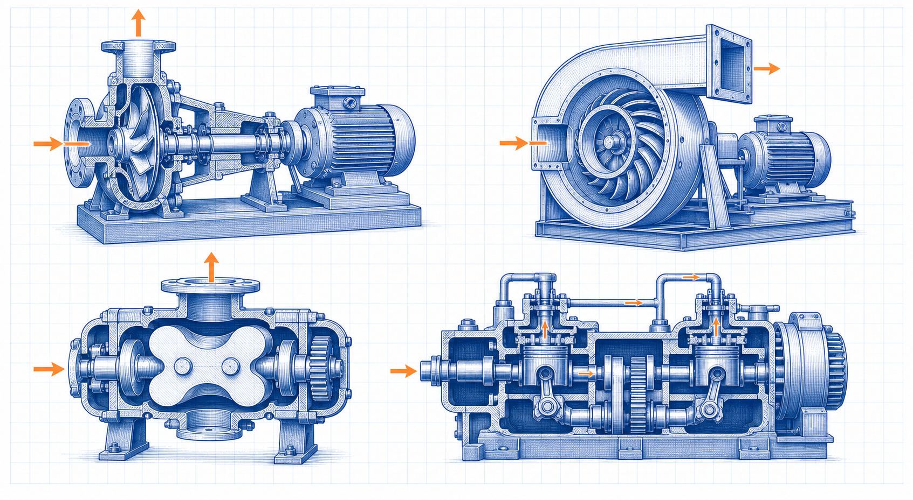

Rotating-equipment guide
Critical Speed of Rotating Shafts
Critical Speed of Rotating Shafts is a focused rotating-equipment guide within the Industrial Calculation Hub knowledge library. It explains the engineering purpose, physical basis, governing inputs, process or equipment interfaces, common failure mechanisms and the limits of preliminary use.

- Content type
- Rotating-equipment guide
- Canonical ID
- ICH-CAN-022
- Source basis
- Machine-design and mechanical-engineering literature
- Last reviewed
- 31 August 2026
What is Critical Speed of Rotating Shafts?
Critical speed is a rotational speed at which a rotor’s running frequency coincides with a natural lateral mode, producing increased shaft deflection and vibration. A rotor may have several critical speeds, influenced by shaft stiffness, disk masses, bearing stiffness, support flexibility and fluid-film effects.
A simple rotor has a first bending natural frequency related to stiffness and mass, but real machinery requires a rotor-bearing model. The bearing pedestal and foundation can be part of the mode shape. Safe operating practice commonly keeps normal speed away from resonance, or passes quickly through a known critical during start-up and coast-down with adequate damping and response limits.
Why this topic needs a component-level basis
Critical Speed of Rotating Shafts is not reliably assessed by a single catalogue value or by one convenient operating condition. Geometry, material condition, assembly, load path, operating history and failure consequence must be recorded together. The objective is a repeatable engineering decision, not an over-precise calculation based on uncertain inputs.
Terms used in the assessment
- Design case
- The combination of geometry, material, load, speed, temperature and support condition used for the check.
- Service condition
- The actual operating state, including starts, process upsets, maintenance condition and environmental exposure.
- Acceptance evidence
- Measurements, inspection records, calculations and traceable documents supporting a decision.
Mechanics and governing relationships
A simple rotor has a first bending natural frequency related to stiffness and mass, but real machinery requires a rotor-bearing model. The bearing pedestal and foundation can be part of the mode shape. Safe operating practice commonly keeps normal speed away from resonance, or passes quickly through a known critical during start-up and coast-down with adequate damping and response limits.
Check 1
critical-speed screening relates rotor natural frequencies to rotational speed
Check 2
Campbell diagrams compare natural-frequency branches with running-speed excitation orders
Check 3
bearing and support stiffness change the calculated mode and cannot always be treated as rigid
Check 4
unbalance response, damping and amplification determine the vibration seen at a resonance
Use consistent units and state the source of each property. Where cyclic loading, a weld detail, a keyway, a contact interface or a support flexibility is present, the gross-section result is only the start of the review.
Applying the relationships responsibly
Relationship 1 in practice. critical-speed screening relates rotor natural frequencies to rotational speed. Before using it, define the section or component to which it applies, the load direction, material-temperature basis and whether the service is steady or cyclic. The relation is a check within the larger component model, not a replacement for the model.
Relationship 2 in practice. Campbell diagrams compare natural-frequency branches with running-speed excitation orders. Before using it, define the section or component to which it applies, the load direction, material-temperature basis and whether the service is steady or cyclic. The relation is a check within the larger component model, not a replacement for the model.
Relationship 3 in practice. bearing and support stiffness change the calculated mode and cannot always be treated as rigid. Before using it, define the section or component to which it applies, the load direction, material-temperature basis and whether the service is steady or cyclic. The relation is a check within the larger component model, not a replacement for the model.
Relationship 4 in practice. unbalance response, damping and amplification determine the vibration seen at a resonance. Before using it, define the section or component to which it applies, the load direction, material-temperature basis and whether the service is steady or cyclic. The relation is a check within the larger component model, not a replacement for the model.
Information required before calculation or selection
- rotor geometry, masses, impeller locations and balance condition
- shaft diameter steps, material, span and coupling inertia
- bearing type, clearance, pedestal stiffness and support structure
- normal speed range, acceleration rate and possible overspeed
- run-up/coast-down vibration and phase data
Photographs can help confirm an installation, but they do not establish dimensions, material grade, preload, runout, stiffness or load spectrum. Obtain records and measurements that identify the actual component condition.
Practical design and verification method
- Review 1. perform a rotor-dynamic review for high-speed, flexible or consequential machines
- Review 2. keep continuous operating speeds separated from critical regions according to the applicable design basis
- Review 3. specify balancing and runout limits consistent with the response analysis
- Review 4. use field run-up data to validate the model after installation
- Review 5. investigate changes in critical response after a rotor, bearing or support modification
Recheck the component following manufacture, installation or operating change. Record the measurement position, instrument, temperature, speed or load condition and the acceptance criterion so the next inspection can be compared with a defensible baseline.
How design intent becomes a controlled installation
Control point 1. perform a rotor-dynamic review for high-speed, flexible or consequential machines. Assign the responsible discipline and inspection stage, then retain evidence that the as-built or as-installed condition satisfies the stated requirement. This avoids relying on a design intent that was not transferred to manufacture or maintenance.
Control point 2. keep continuous operating speeds separated from critical regions according to the applicable design basis. Assign the responsible discipline and inspection stage, then retain evidence that the as-built or as-installed condition satisfies the stated requirement. This avoids relying on a design intent that was not transferred to manufacture or maintenance.
Control point 3. specify balancing and runout limits consistent with the response analysis. Assign the responsible discipline and inspection stage, then retain evidence that the as-built or as-installed condition satisfies the stated requirement. This avoids relying on a design intent that was not transferred to manufacture or maintenance.
Control point 4. use field run-up data to validate the model after installation. Assign the responsible discipline and inspection stage, then retain evidence that the as-built or as-installed condition satisfies the stated requirement. This avoids relying on a design intent that was not transferred to manufacture or maintenance.
Control point 5. investigate changes in critical response after a rotor, bearing or support modification. Assign the responsible discipline and inspection stage, then retain evidence that the as-built or as-installed condition satisfies the stated requirement. This avoids relying on a design intent that was not transferred to manufacture or maintenance.
Example engineering review
A variable-speed blower that crosses a first critical during ramp-up needs an acceleration profile that passes the resonant band promptly. If the control system holds speed there for process control, the rotor, pedestal and foundation response should be reassessed before changing the alarm limits.
The example illustrates why replacement of a failed component alone is rarely sufficient. The review should identify the initiating mechanism, the feature that concentrated the response, the evidence that confirms it and the design or operating change that prevents recurrence.
Where it is used
Critical Speed of Rotating Shafts is relevant to centrifugal compressors, turbines, high-speed pumps, fans, motors, spindles and process blowers. The same mechanics may apply in other industries, but material properties, environmental exposure, inspection rules and acceptable consequence of failure remain project-specific.
Common failure routes and warning signs
- a stiff shaft can still have a low system critical if pedestals are flexible
- operating near a critical can damage seals, bearings and couplings even without immediate failure
- increased vibration at a critical is not proof of unbalance alone
- a variable-speed drive can spend prolonged time in a resonant band if acceleration is poorly controlled
Failure route 1
a stiff shaft can still have a low system critical if pedestals are flexible. Treat this as a reason to inspect the underlying load path or duty before changing a part.
Failure route 2
operating near a critical can damage seals, bearings and couplings even without immediate failure. Treat this as a reason to inspect the underlying load path or duty before changing a part.
Failure route 3
increased vibration at a critical is not proof of unbalance alone. Treat this as a reason to inspect the underlying load path or duty before changing a part.
Failure route 4
a variable-speed drive can spend prolonged time in a resonant band if acceleration is poorly controlled. Treat this as a reason to inspect the underlying load path or duty before changing a part.
Trend information that is physically connected to the mechanism: torque, temperature, vibration, displacement, strain, leakage, bolt elongation, oil condition or crack indication. A measurement with a known location and operating state is more useful than a single visual judgement.
Inspection, maintenance and change control
Before altering Critical Speed of Rotating Shafts, confirm isolation, stored energy, lifting, access, hot-work, guarding and process hazards. A modification to material, geometry, coating, lubrication, tightening method, speed, load, support, control logic or operating cycle can change the basis of the original assessment. Update the drawing, maintenance record and test result together.
Acceptance and reassessment record
1. Evidence item. Record rotor geometry, masses, impeller locations and balance condition. It should be tied to the specific component and operating case, not copied from a nominal data sheet. This evidence changes the confidence in the final decision.
2. Evidence item. Record shaft diameter steps, material, span and coupling inertia. It should be tied to the specific component and operating case, not copied from a nominal data sheet. This evidence changes the confidence in the final decision.
3. Evidence item. Record bearing type, clearance, pedestal stiffness and support structure. It should be tied to the specific component and operating case, not copied from a nominal data sheet. This evidence changes the confidence in the final decision.
4. Evidence item. Record normal speed range, acceleration rate and possible overspeed. It should be tied to the specific component and operating case, not copied from a nominal data sheet. This evidence changes the confidence in the final decision.
5. Evidence item. Record run-up/coast-down vibration and phase data. It should be tied to the specific component and operating case, not copied from a nominal data sheet. This evidence changes the confidence in the final decision.
Questions for the release review
Does the final condition match the documented geometry and material? Has the governing transient or fatigue case been included? Can inspection find the credible initiation location? Are the acceptance values measured under the conditions assumed by the design? If any answer is uncertain, state the limitation and assign the next action rather than declaring the component fully verified.
Frequently Asked Questions
Is critical speed the same as maximum allowable speed?
No. It is a resonance-related speed. The operating and overspeed limits also depend on rotor stress, bearings, containment, drive capability and the equipment standard.
Which inputs should be confirmed for Critical Speed of Rotating Shafts?
Information required before calculation or selection rotor geometry, masses, impeller locations and balance condition shaft diameter steps, material, span and coupling inertia bearing type, clearance, pedestal stiffness and support structure normal speed range, acceleration rate and possible overspeed run-up/coast-down vibration and phase data Photographs can help confirm an installation, but they do. Confirm the source, condition and measurement basis for each input before treating a calculated or selected value as reliable.
How should Critical Speed of Rotating Shafts be reviewed in practice?
Practical design and verification method Review 1. perform a rotor-dynamic review for high-speed, flexible or consequential machines Review 2. keep continuous operating speeds separated from critical regions according to the applicable design basis Review 3. specify balancing and runout limits consistent with the response analysis Review 4. use field run-up data to. Record the actual operating line-up and repeat the review at the condition most likely to challenge performance.
What warning signs deserve early attention?
Common failure routes and warning signs a stiff shaft can still have a low system critical if pedestals are flexible operating near a critical can damage seals, bearings and couplings even without immediate failure increased vibration at a critical is not proof of unbalance alone a variable-speed drive can spend prolonged time. A trend linked to the physical mechanism is more useful than waiting for a single visible failure.
What evidence supports acceptance?
Acceptance and reassessment record 1. Evidence item. Record rotor geometry, masses, impeller locations and balance condition. It should be tied to the specific component and operating case, not copied from a nominal data sheet. This evidence changes the confidence in the final decision. 2. Evidence item. Record shaft diameter steps, material, span. Keep the records traceable so later maintenance or a process change can be compared with the original basis.
When should Critical Speed of Rotating Shafts be reassessed?
Reassess it after a change in duty, throughput, process material, temperature, pressure, geometry, maintenance condition, control logic or a recurring abnormal trend. The original result is valid only for the conditions it represented.
Can a typical value or handbook rule be used for final design?
Only as a preliminary screen. Final decisions for Critical Speed of Rotating Shafts need the actual component or system data, applicable standard, supplier limits and qualified engineering review.
Where should an engineering investigation begin?
Start by defining the system boundary and current operating condition, then compare measured evidence with the design intent. Address the controlling mechanism before changing capacity, setpoints or hardware.
References
- Mechanical Engineering Handbook. Supplied source library.
- Theory of Machines and Mechanisms. Supplied source library.
Original educational summary informed by the supplied literature. It does not reproduce protected source text, figures, tables or standards material.